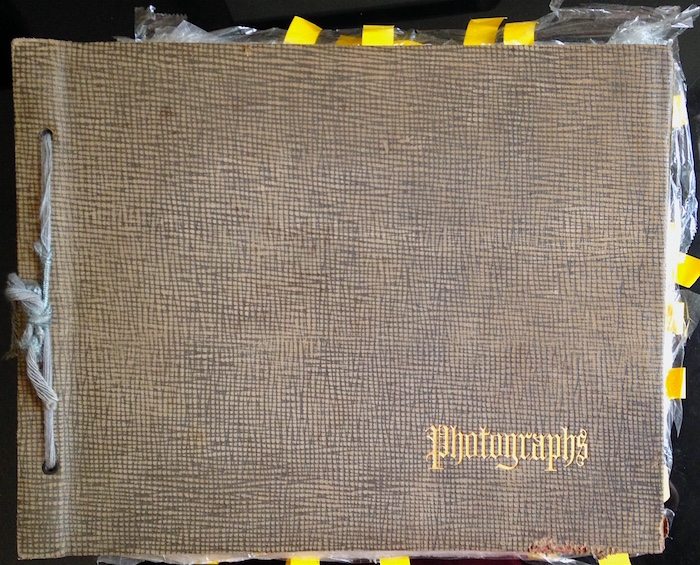
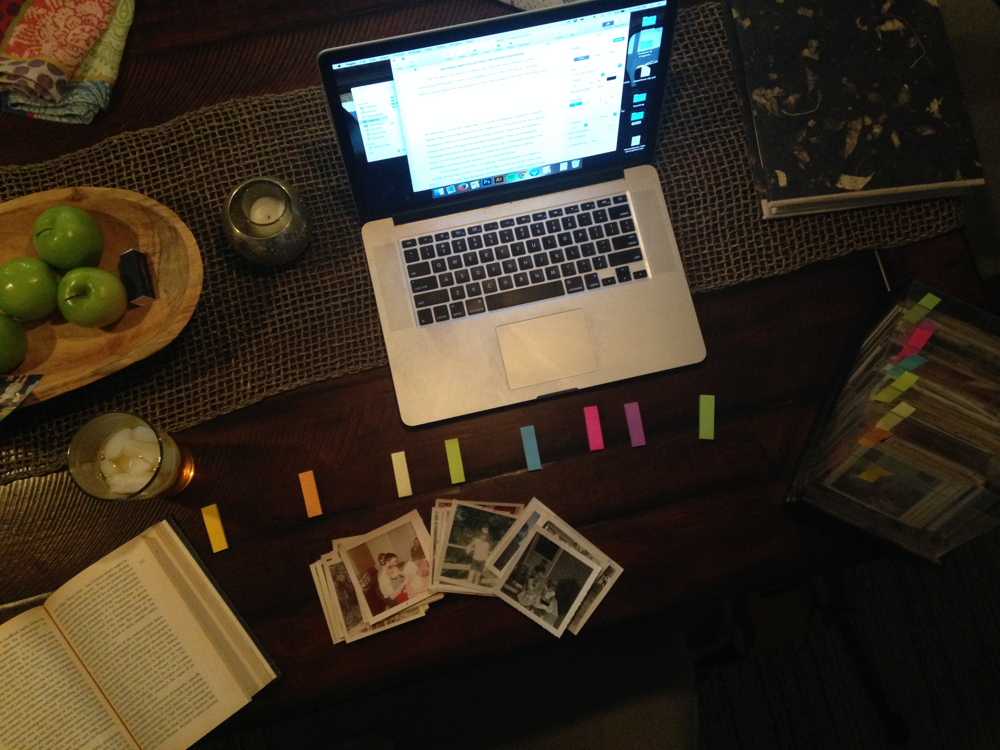
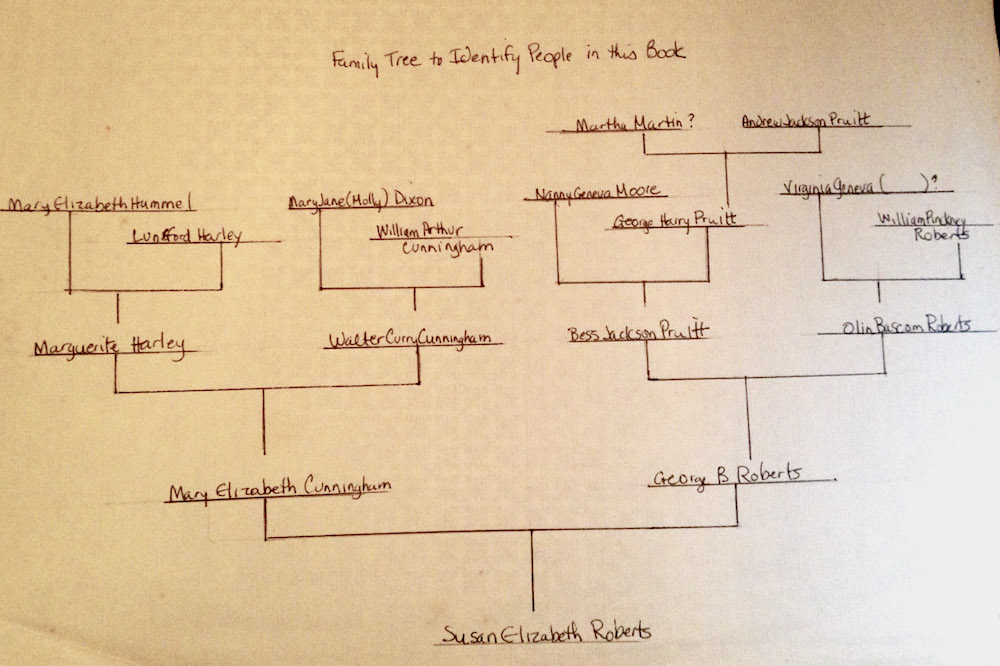

The project is curated from three collections of family photos spanning the past 100 years of American history. Loosely following the technological history of photography since its rise in the masses, I took different family albums from the beginning of family photography in the early 20th century until the present day.
This album came from an estate sale in upstate New York. The album contained over 200 photos that were immaculately preserved and organized through thorough captions and annotations
This collection of photos came from a family friend in Virginia. These photos arrived in a large tote bag, filled with sleeves and rolodexes of hundreds of photos. The collection was very organized and most of the images contained captions and names on the back of the photos. Tucked in the back of this album was a very detailed tree of the family, which was very important in helping organize and select the final photos from this collection.
 The Melillo family graciously allowed me to comb through their digital lives from the past ten years, using photos for this project. The images came from their Blogspot blog, Facebook timeline, and Instagram feed.